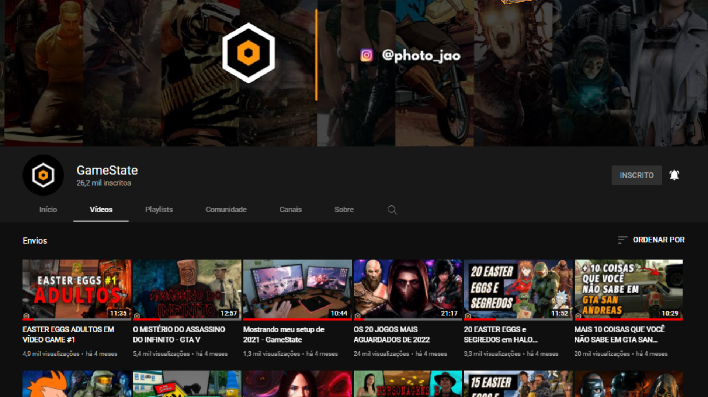
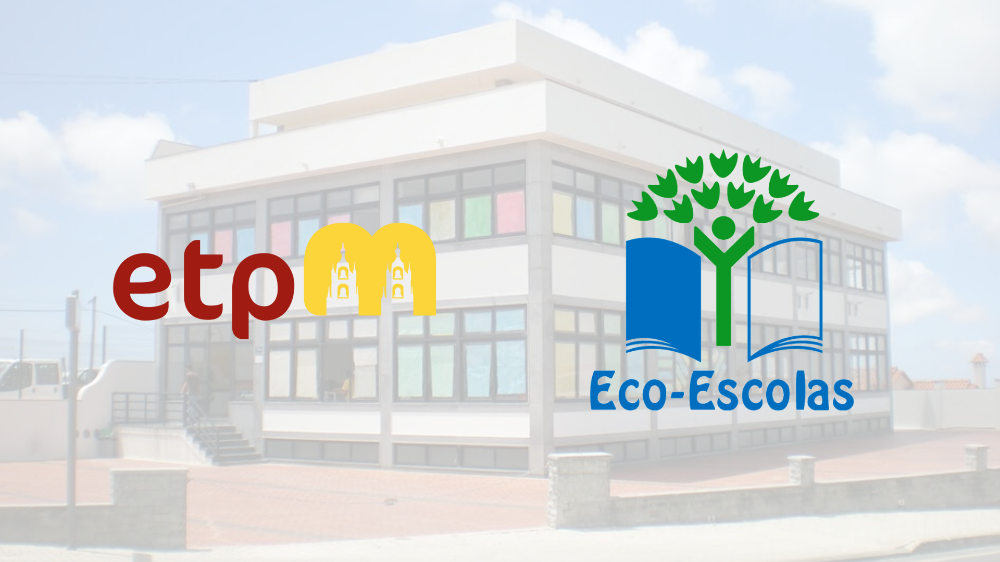

O que é o GameState?
O Gamestate é um canal no Youtube criado por João Guilherme para falar sobre easter eggs, mistérios, segredos, notícias e tudo mais que envolva jogos de vídeo game. O canal iniciou durante a pandemia de 2020 com o simples objetivo de ser uma fonte de aprendizado sobre edição de vídeos, mas logo cresceu e atingiu um grande público, passando a ser um canal sério sobre jogos.
Qual o objetivo do site?
O GameState (site) foi criado para a realização da Prova de Aptidão Profisional da Escola Técnica e Profissional de Mafra. O site é bem diversificado e tem como principal objetivo compartilhar informações sobre jogos, seja através de vídeos, artigos ou podcast. Além disso, o site tem como objetivo compartilhar jogos feitos por mim, João Guilherme, ou por outras pessoas, com o objetivo de partilhar os apredizados e conhecimentos obtidos.

Conhecimentos para a construção do projeto
No primeiro ano do curso de Técnico em Elétronica, Automação e Computadores, apresentamos diverssos trabalhos, e para tal, começamos a desenvolver as habilidades em criação de sites, power points e edição de vídeos/imagens, particularmente, comecei a me interessar muito em edição de vídeo e criação de sites, tanto que procurei desenvolver estas habilidades fora do curso.
Já no segundo ano, começamos a programar arduinos e jogos, utilizando linguagens como C++, em blocos, C#, entre outras. Assim como no primeio ano, gostei muito de programação e comecei a estudar mais aprofundadamente fora do curso.
No terceiro ano, desenvolvemos mais os conhecimetos na área de programação com o Python e na criação de sites ao aprendermos a criar servidores utilizando uma Raspberry Pi o que deu uma boa ideia prática de como funciona a internet e, logicamente, os sites.
Escola Técnica e Profissional de Mafra e o programa Eco-Escolas
Através do programa Eco-Escolas, a Escola Técnica e Profissional de Mafra visa desenvolver atividades ligadas a uma melhoria no desempenho ambiental e contribuir para a alteração de comportamentos e para o impacto das preocupações ambientais nas diferentes gerações, reconhecendo e premiando o trabalho desenvolvido. É nosso objetivo encontrar soluções que permitam melhorar a qualidade de vida na escola e na comunidade.
